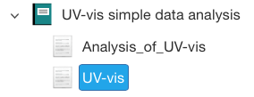
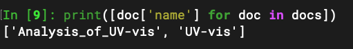

inm_rspace.core module¶
Examples¶
Get all documents in an RSpace Folder or Notebook:
import inm_rspace as rs
docs = rs.get_docs_in_notebook(7074)
print([doc['name'] for doc in docs])
Output:
API documentation¶
- inm_rspace.core.compare_forms(form1, form2)[source]¶
determine whether or not two forms have identical names and fields.
- Parameters:
form1 (dict) – a dict corresponding to an RSpace form containing at least the keys ‘name’ and ‘fields’.
form2 (dict) – a dict corresponding to an RSpace form containing at least the keys ‘name’ and ‘fields’.
- Returns:
match (bool) – True if both forms are identical, False otherwise.
- inm_rspace.core.field_index(document, field_name)[source]¶
get index of the (first) field from an Rspace document dict with a given name.
- Parameters:
document (dict) – input document
field_name (str) – name of the field to be accessed
- Returns:
idx (int) – the index of the field with the given name
- inm_rspace.core.get_docs_in_folder(folder_id, form_pattern=None, verbose=False)[source]¶
scan for Rspace documents in a given folder whose form name matches a pattern
- Parameters:
folder_id (str) – folderID of the Rspace folder to search for matches
form_pattern (str) – glob-style pattern that the form name must match
- Returns:
results (list<dict>) – list of documents matching the form name
- inm_rspace.core.get_docs_in_notebook(notebook_id, form_pattern=None, verbose=False)[source]¶
scan for Rspace documents in a given folder whose form name matches a pattern
- Parameters:
notebook_id (str) – notebookID of the Rspace notebook to search for matches
form_pattern (str) – glob-style pattern that the form name must match
- Returns:
results (list<dict>) – list of documents matching the form name
- inm_rspace.core.get_field(document, field_name)[source]¶
get (the first) field from an Rspace document dict with a given name.
- Parameters:
document (dict) – input document
field_name (str) – name of the field to be accessed
- Returns:
field (dict) – field with the given name
- inm_rspace.core.get_files(document, field_key=None)[source]¶
list files attached to (a field in) an Rspace document
- Parameters:
document (RspaceDocument) – input document
field_key (int or str, optional) – name of the field, from which files are extracted. If None, files from all fields are listed.
- Returns:
files (list<tuple<str,str>>) – files found as globalId,filename-pairs.
- inm_rspace.core.get_form_by_dict(new_form)[source]¶
if it exists, get the Rspace form matching a dict. Otherwise, create a new form first.
- Parameters:
new_form (dict) – a dict corresponding to an RSpace form containing at least the keys ‘name’ and ‘fields’.
- Returns:
rs_form (dict) – the found/newly created RSpace form.
- inm_rspace.core.get_requests(shared_folder_id, verbose=False)[source]¶
get all shared documents requesting a workflow to be performed
- Parameters:
shared_folder_id (str) – folderId of the “Shared” Folder in Rspace
- Returns:
results (list<dict>) – list of shared Rspace documents using a Request:* form
- inm_rspace.core.html_ref(rspace_obj)[source]¶
html string to reference an Rspace object
- Parameters:
rspace_obj (file or document) – Rspace object
- Returns:
string (str) – string that can be inserted in an html string to reference the given object.
- Raises:
ValueError – raised if the rspace object type is not recognized
- inm_rspace.core.tables_from_xml(xml_string, file, delimiter=',', replace={' ': '_', ',': '.', '</p>': '', '<p>': ''})[source]¶
extract all tabular data from an xml string and save it as a csv file.
- Parameters:
xml_string (str) – input xml string
file (str) – file path to use, although an appendix is going to be inserted to enumerate multiple tables in the xml string.
delimiter (str, optional) – field delimiter to be used in the csv file
replace (dict, optional) – key,value pairs indicating strings (keys) to be replaced with their corresponding value.
- Returns:
files (list<str>) – List of files exported.